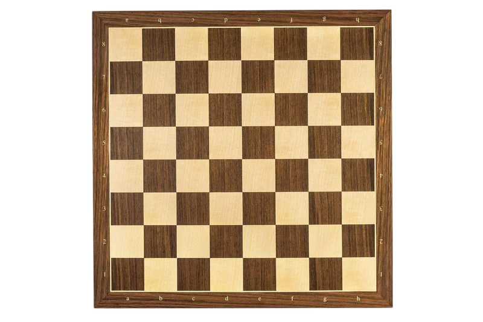
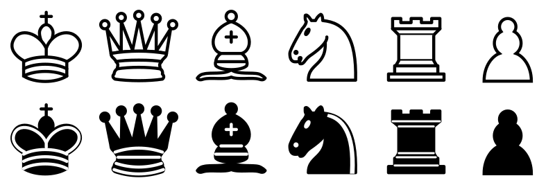

Chess Board
The chessboard is a square board divided into 64 smaller squares of alternating colors, typically black and white, arranged in an 8x8 grid
Chess Pieces
Each player begins with 16 pieces: one king, one queen, two rooks, two knights, two bishops, and eight pawns
Chess Clock

A chess clock consists of two adjacent clocks with buttons to stop one clock while starting the other, so that the two
Main rules
- Each player begins with 16 pieces: one king, one queen, two rooks, two knights, two bishops, and eight pawns
- Each piece moves in a specific way
- Each piece captures in a specific way
- The king is the most important piece
- The game ends when a player checkmates the other player's king
Play Chess Online
There are many websites where you can play chess online. Some of the most popular ones include: